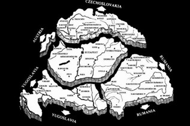
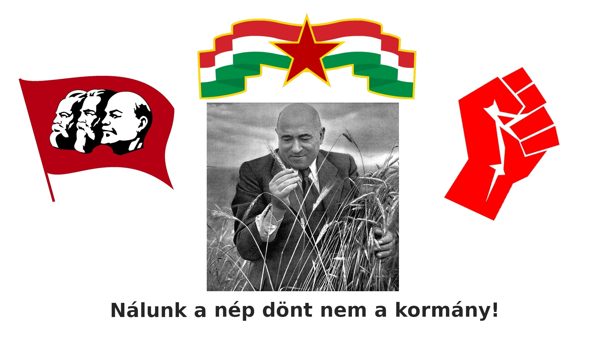
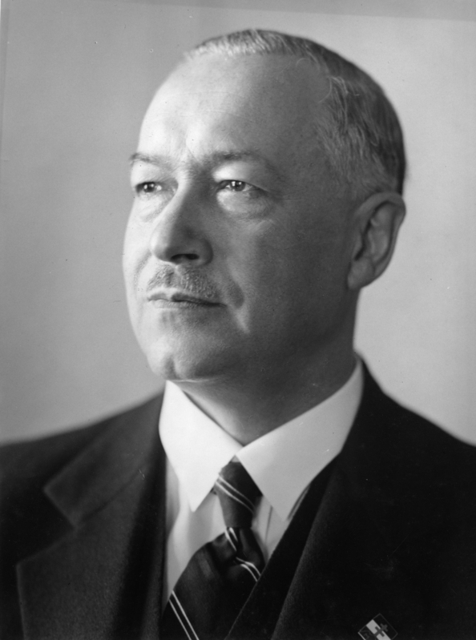
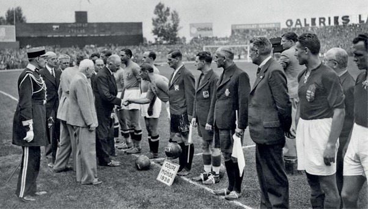
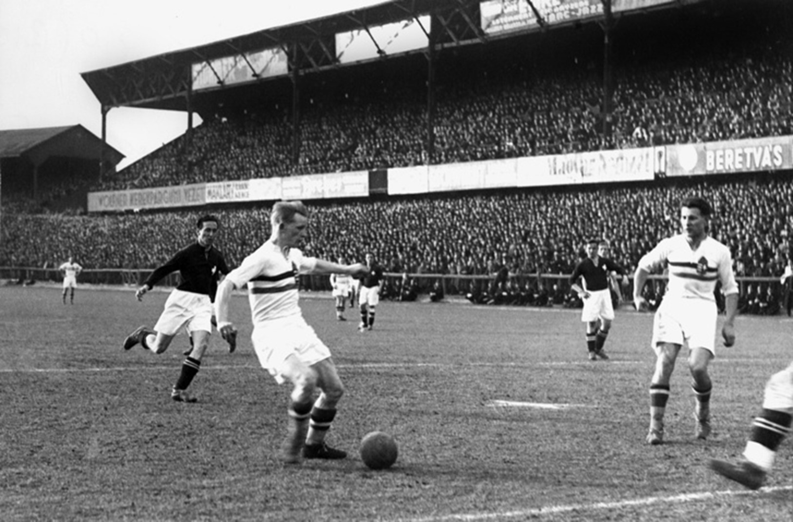
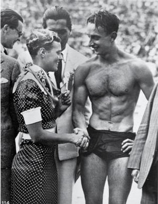
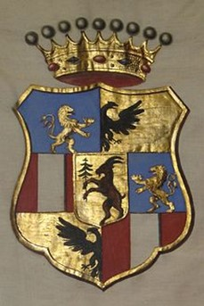
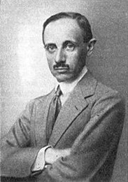

Kezdőlap
Készítők:
Jámbor Tamara
McFegan Rebecca
Görgei Levente
Farkas Bercel
Badó Máté
Mivel a feladatkiírásban szerepelt hogy lehet weblapszerűen is megszerkeszteni a feladatot, ezért mi úgy gondoltuk hogy weblapként mégjobban nézne ki --ez elméletben így is van, ha tudnánk weblapot írni--, emiatt lehet hogy vannak benne kisebb bug-ok vagy valamelyik képernyőméreten egymásba csúszik 1-2 dolog, erre főképpp telefonon van esély, gépen elég jól le van tesztelve
(de ettől függetlenül érdemesebb gépen nézni, mivel arra lett terveze)
A válsztott feladatok:
1. Egy Trianonról megemlékező cikk
2. Plakát a baloldal propagandájának
3. Interjú Darányi Kálmánnal
4. Cikk a korabeli sportról
5. A korabeli diplomácia feltérképezése
6. A baloldal gondolatai a zsidótörvényekről
7. A Teleki család bemutatása
Trianon
Hazánkat történelme során elszenvedett egyik legtragikusabb eseménye 1920 június 4.-én érte, amikor is a versailles-i Nagy-Trianon palotában aláírtuk az I. Világháborút lezáró békediktátum és ezzel elfogadtuk a történelmi Magyarország felfoghatatlan mértékű megcsonkítását.
Elcsatolták az ország területének kétharmadát a lakosságának több mint fele pedig másik ország polgárává vált. Az elcsatolt területek közül Csehszlovákia megkapta a Felvidéket, a Kisalföld északi részét és Kárpátalját, Romániához hozzákapcsolták egész az alföld pereméig Erdélyt, a Szerb-Horvát-Szlovén királyság Horvátországot kaparintotta meg, hazánk területeiből még Ausztria és Lengyelország is kaparintott meg magának némi területet hazánkból |
 |
„Magyarországon, különösen Budapesten nemcsak a reggel volt borús és szomorú, napközben is gyászoltak az emberek. Az iskolákban és a hivatalokban szünetet rendeltek el, az újságok gyászkeretben jelentek meg, a zászlókat félárbocra eresztették. A boltok közül is csak azok nyitottak ki, amelyek élelmiszert árultak.” írta egy korabeli újság a közhangulatról a békediktátum aláírása után, a Trianon szó nem csak akkor, hanem még napjainkban is egyet jelent az igazságtalansággal és az elkeseredéssel.
Bal oldali propaganda plakát

×

A "Nálunk a nép dönt nem a kormány!" kampányszöveg azért lehet jó baloldali szöveg, mivel ők az "egyenlőséget" hírdették, ehhez meg hozzá tartozik az is hogy a nép dönt
Interjú Darányi Kálmánnal

1. Nem hátráltatta semmiben az, hogy törvénytelen gyermekként született?
Nem, az ,hogy Nagy Antónia törvénytelen gyermekeként születtem semmijen hátrányt nem okozott számomra, bár nem rögtön születésemkor de megkaptam a Darányi nevet és a család nemesi rangját is .A politikai ellenfeleim pedig sohasem próbálták felhasználni ellenem kétes családi hátteremet.
2. Milyen hatással volt életére az 1902-es nyári szünidő, amelyet Grazban töltött?
Az iskolai tanulmányaim alatt és a későbbiekben is gondjaim voltak a német nyelvvel, azonban ezen a nyáron mellém és öcsém mellé édesapám német tanítót fogadott, amely nagy segítséget jelentett a nyelv elsajátításában. Ezen felül a sportokat is itt szerettem meg, kedvencemé vált az úszás
3. A jogi kar elvégzése után hogyan alakult a politikaipályája?
1909-ben szereztem meg doktorátusomat és még ebben az évben megkaptam Pest-Solt-Pilis-Kiskun vármegye közigazgatási gyakornoki tisztségét, majd szintén ebben az évben a Belügyminisztériumban is állást kaptam a melyből a koalíció bukása után távoznom kellet, és az erdélyi Fogaras vármegyében lettem helyette főszolgabírói, ez karrier szempontjából visszalépésnek számított. Fogarason körülbelül négy és fél évet dolgoztam, ez idő alatt fokozatosan haladtam felfelé a hivatali ranglétrán és megismerkedett a politikai versengéssel és a közigazgatás mechanizmusával.
4. Mivel foglakozott a világháború ideje alatt?
1914-ben jelentkeztem katonai szolgálatra, amelyet huszárként le is töltöttem és 1917 januárjában szereltem le, majd júniusban megkaptam Zólyom vármegye főispáni tisztségét.
5. Mi az, amit leginkább szeretett volna megvalósítani Győr vármegye főispánjaként.
Az általam leginkább támogatott helyi kezdeményezés a Pozsonyi egyetem Győrbe való költöztetése volt. A város mozgalmat indított az egyetem és annak hitjogi, államtudományi és bölcsészeti karának a városba való telepítése érdekében, persze Győrön kívül még több nagyváros is lobbizott az egyetemért, azonban mint azt tudjuk végül Pécsre költözött a pozsonyi egyetem. Azonban én így is személyes sikerként életem meg az egyetemmel kapcsolatos ügyeket, hiszen ennek hatására neveztek ki Moson vármegye főispánjának is.
6. Mesélne kérem az 1931-es puccskísérletről?
Sem megerősíteni sem cáfolni nem fogom, hogy bármi közöm lett volna ehhez a szélsőjobboldali kísérlethez azonban azt el tudom mondani, hogy tudomásom szerint a terv az volt, hogy Horthy kormányzót Gödöllőn fogságba ejtik és erőszakkal kényszerítik a hatalom átadására.
7. Megtartott korábbi államtitkári szerepét Gömbösi Gyula miniszterelnöksége alatt is változott valamennyire a feladatköre vagy minden maradt a régiben?
Mivel a tisztségem nem változott ezért lényeges változások a munkakörömben sem történtek azonban néhány újabb nagyobb felelősséggel járó feladatot is ram bízott az új felettesem.
8. Milyen volt földművelésügy élére kerülni?
Pont 40 évvel az után kaptam meg ezt a tisztséget, mint ahogy nagybátyám Darányi Ignác először tárcára került, ami családom számára egy hatalmas siker hiszen már a második Darányi férfi vezeti a földművelésügyeket. Emellett persze elég nehéz helyzetben voltam hiszen a Trianoni békeszerződés okán megváltozott gazdasági helyzetet kezelnem kellett.
9. Milyen kapcsolatot ápolt szüleivel?
Édesanyám betegségéről való értesülésekor a tőlem telhető leghamarabb haza utaztam, amiből arra következtethetnek, hogy elég közeli és soros kapcsolatot ápoltunk. Édesapámtól szigorúan vallásos reformátust nevelést kaptunk és ő szerette meg velem a sportolást is a korábban már említett grazi nyár során.
10. Érzett valaha megfelelési kényszert édesapja irányába?
Mint ahogy általában tehetősebb családok gyermekeinél lenni szokott és is úgy éreztem, hogy legalább olyan sikeresnek kell lennem, mint a felmenőimnek. Emellett úgy gondolom, hogy elsőszülött fiúként sokkal nagyobb nyomás nehezedett rám, mint öcsémre Gyulára.
Sportélet a Horthy-korszakban
A 19. század végén a legnagyobb közönséget a lóversenyzés és a kerékpározás vonzotta, azonban a századfordulón a foci minden más sportot maga mögé utasított.

Világbajnoki ezüstérmet nyert a magyar labdarúgó-válogatott 1938-ban.
Az első világháború miatt megritkultak a versenyek, a fiatal sportolókat tömegével sorozták be, sok meghaltak a fronton. A visszaesés azonban csak átmeneti volt. Az 1920-as években a fővárosi labdarúgó csapatok rangadóit és a válogatott mérkőzéseit már 30-40 ezres közönség látogatta.

Foci meccs telt lelátókkal, ami napjainkban országunkban már szokatlan.
Ekkoriban vált sikersporttá Magyarországon a vízilabda, az ökölvívás és a birkózás. Eközben a magyar vívók és úszók továbbra is jól szerepeltek a nemzetközi versenyeken.

Csík Ferenc Úszó, olimpiai bajnok (1936)
A magyar sportolók iránti rajongás nem csupán a sportteljesítményeknek szólt, hanem jót tett a nemzettudat számára. Minden nemzetközi siker elégtételt jelentett.
A különböző miniszterelnökök külpolitikája
Károlyi Gyula rövid miniszterelnöki időszaka alatt főleg a válság kezelésével és a belőle való kilábalással volt elfoglalva, így a külpolitikai tevékenysége is leginkább ehhez kapcsolódó tevékenységekre korlátozódott, jelentősen nem változtatott az ország kapcsolatain.
Az utána következő Gömbös Gyula határozott külpolitikai irányt képviselt, már az is sokat elmond, hogy a példaképe Mussolini volt. A gazdaság megerősítése céljából olasz, német és osztrák piacokat keresett a magyar termékeknek. Alapvetően a diplomáciai kapcsolatokat először az osztrákokkal és Olaszországgal javította, de később (a revíziós törekvések támogatásának reményében) közeledett a hitleri Németországhoz is. Tehát a válságkezelés érdekei után/mellett az volt fontos Gömbös kormányának, hogy a diplomáciai kapcsolatait a fő céljuk, a revízió érdekében alakítsa. Így az esetleges támogatók felé húzott (bár gazdasági érdekekből a szovjetekkel is felvették a kapcsolatot), a kisantant országaival pedig nem tudott javítani a diplomáciai viszonyon. Ezek az országok ugyanis magától értetődő, hogy nem nézték jó szemmel Magyarország revíziós törekvéseit.
Darányi Kálmánt a külpolitikai iránymódosítás szellemében nevezték ki miniszterelnökké. Előtte a németekhez kerültünk a legközelebb, most a jó viszony fenntartása mellett újra közeledett az olaszok, és ami még fontosabb, a nyugati hatalmak felé. Ezzel lényegében elérték, hogy később a revíziós döntéseket a németek támogatása mellett az előző háború győztes hatalmai se ellenezzék. Az Ausztria és Csehszlovákia elleni fellépést sem támogatta a magyar kormány, azonban később belenyugodott a németek akaratába. Az ország még erősebben sodródott a németek irányába. Bizonyos lépések abba az irányba mutattak, hogy Magyarország nem feltétlenül békés úton kívánja elérni a revíziót. Tehát kijelenthetjük, Darányi végül nem olyan irányba mozdította a diplomáciai kapcsolatokat, mint azt a kinevezésekor remélték.
Imrédy Béla is hasonló elvárásokkal nézett szembe, mint elődje, azt várták tőle, hogy közeledjen a Nyugathoz, miközben a németek revízióhoz szükséges támogatását is megtartja. Angolbarátnak tartották, de ő sem tudott szorosabb diplomáciai kapcsolatokat kialakítani a nyugati hatalmakkal. A monarchia utódállamaival sikerült viszont megegyezni, hogy Magyarország fegyverkezhessen. A kérdés a Csehszlovákiával szembeni fellépés volt. Hitler elvárta volna, hogy a magyarok erőszakosan is fellépjenek vele együtt, azonban a következményektől félve ezt a magyar kormány próbálta elkerülni. Később mégis békés egyeztetésre kerülhetett sor. A nagyhatalmak Magyarországra és Csehszlovákiára bízták a határok átgondolását, azonban a két ország nem tudott megegyezésre jutni. Ezek után (az angolok és a franciák ügytől való távolmaradásának következményeként) az olaszok és a németek döntöttek és az első bécsi döntésben Magyarországnak adták Csehszlovákia magyarlakta területeit.
A korszak magyar diplomáciai kapcsolatait elsősorban (kis ellensúlyozásoktól eltekintve) a Németországhoz és Olaszországhoz való közeledés jellemezte. Az egyre erősödő német fenyegetés mellett a környező országokkal is sikerült, ha nem is jobb viszonyt létrehozni, de bizonyos ügyekben kompromisszumra jutni. Az egymást követő kormányok legnagyobb külpolitikában elért eredménsyének egyértelműen az tekinthető, hogy a németek támogatását sikerült elnyerni annyira, hogy a számunkra kedvező első bécsi döntés megszülethessen.
Általánosságban a diplomáciáról
-
a diplomácia a kapcsolatok ápolásáról, a különböző
érdekeltségű országok közötti „helyezkedésről” szól
-
egy diplomatának fontos, hogy jól tudjon kommunikálni,
meggyőző legyen és jó emberismerő
-
a más országokkal való viszony kulcsszerepet játszik egy
ország életében
Mit gondolhatott a baloldali politika a zsidótörvényekről?
1933 és 1940 között 2 darab zsidótörvény lett elfogadva a törvényhozók által. Mivel a Numerus clausus, ami az egyetemekre való beiratkozást a nemzetiségek országon belüli arányához kötötte, nem számít zsidótörvénynek.
Az első zsidótörvény 1938ban érvényesült, és azt mondta ki hogy a szabadfoglalkozású állásoknál és a tíz értelmiséginél többet foglalkoztató kereskedelmi, pénzügyi és ipari vállalatoknál 20% lehet a zsidók maximális aránya, melyet öt év türelmi időszak alatt kell elérni.
A második zsidótörvény egy évvel az első után jelent meg és ez már nem vallásilag határozta meg ki volt zsidó, hanem fajilag és sokkal durvább retorziókat szabott ki a zsidó származásúakra mint az előzőek.
1933-ban a magyar politikai szélsőbal oldalt a Kommunisták Magyarországi pártja alkotta, ami 1918ban alakul először, majd a 1919es feloszlatása után 1922-től egészen 1943-ig működött, először Kun Béla vezetésével, akit Kádár János volt le.
Mellettük, habár nem ennyire szélsőséges, volt a Magyarországi Szociáldemokrata Párt, ami 1890-ben alakult, a két feloszlatás ellenére még ma is működik, habár a parlamentbe nem sok sikerük van bejutni.
A bal oldal főképp abban különbözik a jobb oldaltól hogy ők inkább a társadalmi egyenlőség és szociális jogokra fektetnek hangsúlyt az egyenlőtlenséggel és a társadalmi hierarchiával szemben. Míg a jobboldalhoz inkább azokat az eszméket, ideológiákat soroljuk amik az embereket nem tartja egyenlőnek, hanem pénz, és más anyagi dologok vagy tartozás alapján különbözteti meg az embereket. A mai világban szerencsére mindenki egyenlő, azzal a kivétellel hogy vannak akik egyenlőbbek a többieknél.
Ebből lehet arra következtetni, hogy a bal oldalnak nem tetszettek a zsidótörvények, elsősorban amiatt is mivel a jobb oldal adta ki, és nyilván a két oldal az nem éppen szereti egymást, másik kézről pedig Kun Béla is zsidó családba született így neki sem annyira kedveztek ezek a törvények. De a többi bal oldali pártokban is számos zsidó, vagy zsidó származású tag volt, akinek természetesen nem tetszhetett az hogy ők kerültek az ellenségképbe. Mivel ha ők azok az emberek akikre a nép nagy része utálattal tekint, akkor nyilván kevesebb szavazójuk lesz, ami kevesebb befolyáshoz juttatja őket, amit meg egy politikus nyilván el akar kerülni minden áron.
A Teleki Család
|  |
A gróf széki Teleki család Erdély és Magyarország egyik legjelentősebb arisztokrata családja. A Teleki család őseinek neve Garázda volt, amely nevet az 1500-as években hagytak el. A família 1697 óta római szent birodalmi grófi ranggal bír. A református ág tagjai közt a legkülönbözőbb rangot és címet viselők szerepelnek. Talán a legismertebb közülük az a Teleki Mihály, aki I. Apafi Mihály fejedelemsége idején volt kancellár. Nem mellékesen ő volt a család vagyonának megalapozója is. A Teleki család római katolikus ága is méltó képviselőkkel rendelkezett. A koltói Teleki-kastélyt feltehetően Mária Terézia uralkodásának idején a család képviselői építették fel, 1821-ben pedig már restaurálták a barokk épületet. |
Teleki Pál
Gróf Teleki Pál, magyar politikus, földrajztudós (1879- 1941), a Teleki család római katolikus ágához tartozott. Tudományos eredményeivel már az I. világháború előtt nemzetközi hírnevet szerzett. 1920-ban külügyminiszter, 1920-1921 között miniszterelnök volt. Elfogadta a trianoni békét, fellépett a tiszti különítmények túlkapásai ellen, franciabarát külpolitikát folytatott. 1927-ben létrehozta a Magyar Revíziós Ligát. A magyar revíziós törekvések szószólója, de felismerte ennek a náci Németország segítségével történő megvalósulásában rejlő veszélyeket. 1939-től haláláig ismét miniszterelnök volt. Megakadályozta a német csapatok Lengyelország elleni felvonulását magyar területen keresztül, és befogadta a lengyel menekülteket. 1940-ben csatlakozott a háromhatalmi egyezményhez és “örökbarátsági” szerződést kötött Jugoszláviával. |
 |